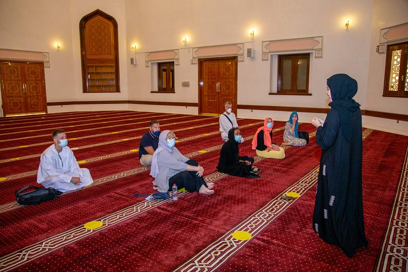

These elements encourage mythologising and a sense of the school as a world apart, a fictional fantasy of high education passed down generations of families whose wealth, as old Etonian writer James Wood put it, "stretched so far back, the origin of their prosperity was invisible." Does the reality match the stories told – and the books written – about the school that rules Britain? Well, not everyone who attended Eton fits the mould. This month sees the publication of One of Them: An Eton College Memoir by writer, podcaster and musician Musa Okwonga. When he attended Eton from 1993 to 1998, Okwonga was one of only a handful of black boys at the school. The book is his contribution to an "exploration of race and class" in Britain, on the grounds that "to understand where we are going as a society, we need to understand how we got here."
Tantalising Bulgarian soprano, Sonya Yoncheva, takes to the stage of the stunning Kloster Schussenried monastery library in Germany. Her stunning performance highlights one of the singer's musical inspirations: powerful female characters, "women with a story", women "with a lot of material to say something". Her recital is part of the Metropolitan Opera's groundbreaking new series of pay-per-view concerts taking place in locations across the globe. Every one is live via satellite, shot using multiple cameras and directed from New York, often thousands of kilometres from the stage. It's the Metropolitan Opera's creative solution to the pandemic.
An illuminating performance
From Verdi and Handel to Dvořák and Edith Piaf, Yoncheva's unique voice is accompanied on the piano by Julien Quentin. Her recital has the same enthusiasm as if it were performed in front of a physical audience. Or as Peter Gelb, the general manager of the Metropolitan Opera, describes it, "the singers have the adrenaline of knowing that thousands of people are watching even though they're not in the room with them". It gives the artists "the adrenaline of the live performance where anything can happen".
The sky is the limit when it comes to celebrating Ramadan in Dubai. From breaking the daily fast with the locals to an iftar on a private jet, the options are astounding. For Muslims, Ramadan is a time to abstain from food and water during daylight hours in order to better appreciate the plight of those less fortunate; to give to charity; to prayer and get closer to Allah. Lasting 30 days, it’s also a time to reconnect with family and friends with the nightly breaking of the fast, a meal known as ‘iftar’. Non-Muslims in Dubai can discover a lot about local customs during Ramadan and partake in iftars – everyone is welcome.
With the motto ‘open doors, open minds’, the Sheikh Mohammed bin Rashid Al Maktoum Centre for Cultural Understanding (SMCCU) has been breaking down cultural barriers from its historic Al Fahidi home since 1998. Cultural Presenter Meera Al Falasi is a volunteer at the centre, hosting programmes and guests keen to learn about her Emirati heritage. “We have different programmes, including cultural meals programmes,” says Meera. “Throughout all of those programmes, we focus on an open conversation. We know that a lot of people have different questions for Emiratis, and we try to create a very open environment where anyone can ask whatever questions they have.” During Ramadan, the SMCCU runs special iftar programmes, giving guests a guided tour of a neighbourhood mosque and sharing a traditional household iftar.
Iftars in hotels and restaurants can be rather lavish affairs – like Christmas dinner for Christians. Samad Al Iraqi, in the heart of Jumeirah, is an especially popular iftar spot for Muslim and non-Muslim families alike. Its classic Dubai iftar begins with dates – a fast source of energy, ideal as a pick-me-up at the end of the daily fast. The centrepiece of the banquet is lamb, representing the sacrificial animal slaughtered in place of Prophet Abraham’s son after he offered up the child to Allah – the ultimate sacrifice. Another Middle Eastern classic, kunafa – layers of crunchy syrup-soaked dough and stringy cheese – tops the most popular dessert options. The food is delicious, but that’s not the sole focus says restaurant partner Moe Alhaj: “Spending time with people you love and breaking fasts with family and friends – having that journey day-to-day for 30 days – that's very special with today's world, how busy we are. It's something that brings us all together.”